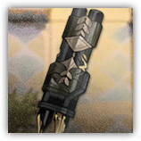

破胄之锤 Hammer of Armor-Breaking
近战 远程 物理；精英 构装（机械）

|  |
破胄之锤。假想敌：胄的武器之一。被召唤出来悬浮作战，拥有自己先攻。沉重的巨锤以毁灭性的力量砸向地面，震荡波能击碎最坚固的护甲。当它升空蓄力时，将暴露其核心，此时是反击的最佳时机。 |
破胄之锤丨Hammer of Armor-Breaking
大型构装（机械；源石造物），无阵营
| AC 22 | 先攻 +6（16） |
| HP 500（40d10+280） | |
| 速度 0 尺，飞行30尺（悬浮；仅当拥有临时生命值时） | |
| 调整 | 豁免 | 调整 | 豁免 | 调整 | 豁免 | |||||||||
|---|---|---|---|---|---|---|---|---|---|---|---|---|---|---|
| 力量 | 26 | +8 | +8 | 敏捷 | 10 | +0 | +0 | 体质 | 24 | +7 | +7 | |||
| 智力 | 6 | -2 | +4 | 感知 | 10 | +0 | +6 | 魅力 | 6 | -2 | +4 |
| 免疫 毒素，心灵；目盲，耳聋，力竭，麻痹，石化，中毒，震慑，昏迷 |
| 感官 盲视120尺，被动察觉10 |
| 语言 无 |
| CR 20（XP 25,000；PB+6） |
特质 Traits
精金装甲 Reinforced Armor。破胄之锤将命中自己的重击视为普通命中，且忽略任何强制位移效应。
链接结构 Linked Mechanic。破胄之锤死亡时，假想敌：胄流失500点生命值。
悬浮核心 Hover Core。破胄之锤飞出敌人触及时不引发借机攻击。
动作 Actions
多重攻击 Multiattack。破胄之锤使用破坏锤击两次攻击。
破坏锤击 Destructive Slam（仅不具有临时生命值时）。近战攻击检定：+14，触及10尺。命中：34（4d12+8）钝击伤害。
蓄力猛击 Power Strike（仅具有临时生命值时）。体质豁免检定：DC20，源自破胄之锤20尺球状区域内的每个地面生物。失败：66（12d10）钝击伤害，并陷入震慑状态。被震慑的目标在每次回合结束时可以重试豁免，成功则解除效应，失败则再受到33（6d10）钝击伤害。
掷锤出击 Hammer Throw（1/日）。破胄之锤瞬间移动至假想敌：胄周围5尺未被占据空间中，立即获得200点临时生命值。拥有此临时生命值期间，破胄之锤具有30尺飞行（悬浮）速度。当所有临时生命值被消耗后，它陷入震慑直到其下回合结束，并立即缓速坠落于地面。
反应 Reactions
装甲强化 Armor Enhancement（仅不具有临时生命值时）。触发：破胄之锤受到攻击。响应：直到本回合结束前，破胄之锤的AC获得+6加值，可能使触发反应的攻击失手。